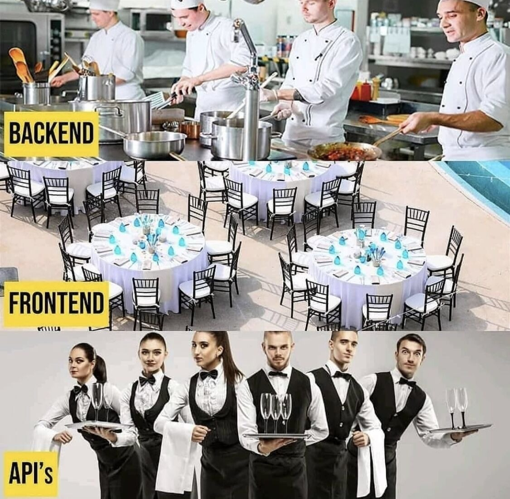

El Mesero Digital: Una Analogía para Entender las APIs
Una de las formas más sencillas de entender qué es una API es pensar en ella como un mesero en un restaurante. Imagina la siguiente situación y sus actores:
- Tú (el Cliente): Eres la aplicación (o el usuario) que necesita algo (datos o una función).
- La Cocina (el Servidor/Sistema): Es donde se "preparan" los datos o las funcionalidades que necesitas.
- El Menú: Es la "documentación" de la API; te dice qué puedes pedir y cómo hacerlo.
- El Mesero (¡La API!): Es el intermediario. Tú no entras a la cocina, le hablas al mesero.
El mesero (la API) toma tu pedido (la petición o request), se asegura de que sea algo que la cocina puede hacer (valida la petición según el menú), lo lleva a la cocina, espera a que esté listo y, finalmente, te trae tu plato (la respuesta o response).
El mesero es ese intermediario crucial que permite la comunicación de forma ordenada y eficiente, ¡sin que tú tengas que saber los detalles de cómo funciona la cocina! Eso es exactamente lo que hace una API entre diferentes sistemas de software.